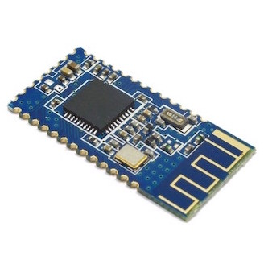
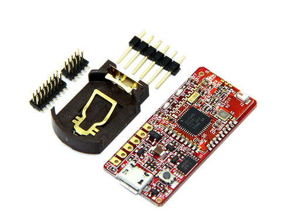
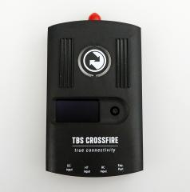
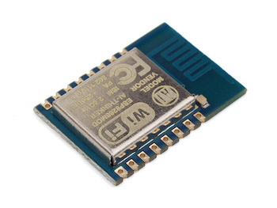
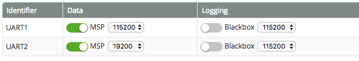

Welcome to Mobile Flight support site
Mobile Flight is an iOS app to configure and monitor aircrafts running Cleanflight and compatible forks such as iNAV and Betaflight. Mobile Flight runs on iPhone and iPad and connects to the aircraft using Wi-Fi or Bluetooth 4.0 (Bluetooth Low Energy.) See below for a list of supported modules.

Bluetooth 4.0 Modules
HM-10 and HM-11
The HM-10 is a readily available Bluetooth 4.0 module based on the Texas Instruments CC2540 or CC2541 Bluetooth low energy (BLE) chip. The module design and firmware originated from the Jinan Huamao Technology Company (JNHuaMao), but is sold by various suppliers. The HM-11 is a smaller variant of the HM-10 and is also supported.The documentation for these modules can be found here.

RedBearLab BLE Mini
The BLE Mini from RedBearLab is about half the size of a stick of gum and is based on the Texas Instruments CC2540 chip. The default firmware ("Biscuit") works fine with Mobile Flight.

Team BlackSheep Crossfire
The Team BlackSheep Crossfire is a long range R/C link based on the newest RF technology, capable of self-healing two-way communications. With the release of firmware V1.20, a bi-directional serial modem was added to CH7 and CH8 of the Diversity receiver. Mobile Flight connects to the Crossfire TX using Bluetooth, and uses the bi-directional modem to communicate with the flight controller.

Wi-Fi ESP8266
The ESP8266 is a low-cost Wi-Fi chip with full TCP/IP stack and microcontroller capability produced by Shanghai-based Chinese manufacturer, Espressif. Any transparent TCP bridge firmware will work. This firmware is known to work fine and will allow you to access the Internet via the cellular network even when connected to the module's Wi-Fi network.

Quick Start
To connect the Wi-Fi or Bluetooth module, you will need a free serial port on your flight controller. You can use any port including soft-serial ones. You can also use UART1 when it is shared with the USB port but you won't be able to use the app when a USB cable is plugged in (which is usually not a problem). Connect the module TX pin to the RX pin of the serial port on the flight controller, and connect the module RX pin to the TX serial port pin.
You will also have to provide power to the module. Some modules require 3.3V and others require 5V. The ESP8266 and barebone (i.e. without breakboard) HM-10 modules need 3.3V. Modules with a breakboard and the RedBearLab BLE Mini need 5V. Refer to your module documentation for details. Note that it's OK to power a 3.3V bluetooth module with the 3.3V pin present on some flight controller boards but the ESP8266 draws too much current and needs its own voltage converter/regulator.
Below is a very helpful tutorial video showing how to connect a Bluetooth module to a Naze32. But note that the module used in the video (HC-06) will not work with an iPhone/iPad and the AT commands are slightly different (Use AT+BAUD4 to set the speed, NOT AT+BAUD8)
Use Cleanflight Configurator to enable MSP DATA on the selected serial port. The selected baud rate MUST match the speed of the module. Note that speed over 19200 may cause buffer overruns and communication errors, especially in the Modes and CLI views.
Troubleshooting
- Handshake failed: This means that the Bluetooth or Wi-Fi module cannot communicate with the flight controller. Check the connections between the module and flight controller. Try to swap TX and RX. Verify that the module and flight controller serial port are using the same baud rate and that MSP DATA is enabled on the serial port. And don't forget to connect GND between FC and module.
- The Bluetooth module is not visible in Mobile Flight, even after refreshing: It's likely that the module is not getting power. Modules with a breakboard usually have a LED to show the connection status. It should blink slowly when powered on but not connected, and should be steady on when connected to the iPhone.
Contact
Having trouble with Mobile Flight? Contact me at mobileflightapp@gmail.com and I’ll try to help.